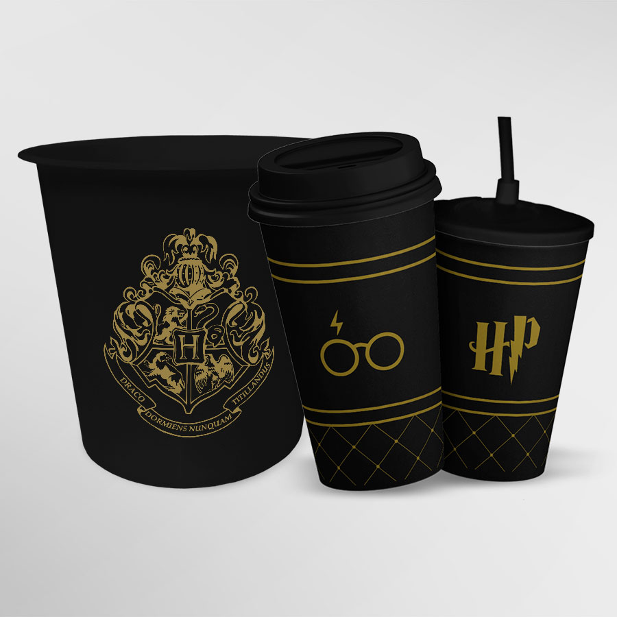
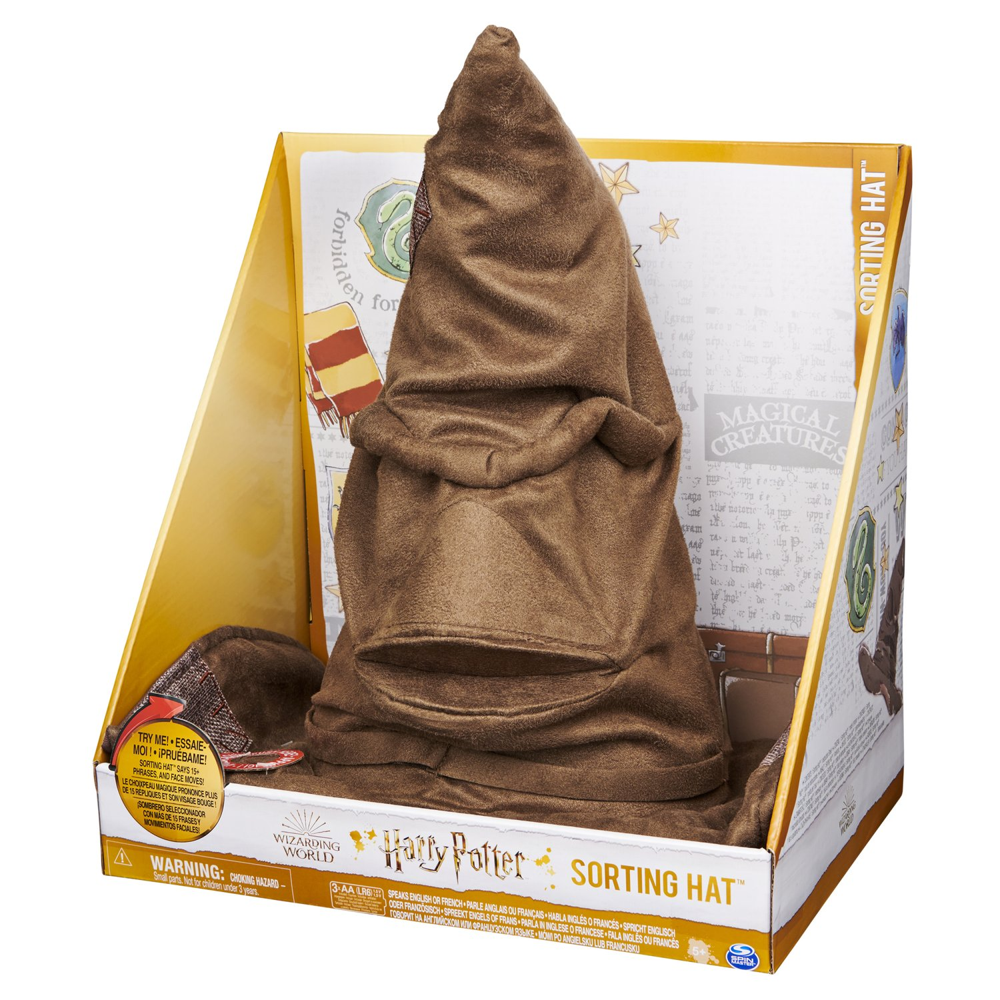

Kit Cinema Hogwarts Harry Potter Balde de Pipoca + 2 Copos
Descrição do Produto:
O Kit Cinema da Fã Camiseteria acompanha um balde de pipoca de 2,5 litros + 1 ou 2 copos O Balde e o Copo ECO são produzidos em material flexível (não é silicone) que não quebra ao cair ou bater. Tamanho do copo: Altura - 16cm | Largura da boca - 9 cm | Capacidade - 600 ml Tamanho do balde de pipoca: Altura - 16cm | Diâmetro da boca - 12,5 cm | Capacidade - 2,5 litros Copo ECO: - Pode ser aquecido - Pode ser resfriado - Produto testado, garantindo a segurança dos alimentos - BPA FREE - Livre da substância química que contém em materiais plásticos - A Classificação 5 PP - Significa que esse material pode ser usado para utilidades domésticas. O anúncio equivale a 1 (um) balde de pipoca + 1 (um) ou 2 (dois) copos e 1 (uma) ou 2 (duas) tampas. ATENÇÃO: O anúncio equivale a 2 (duas) ou 3 (três) unidades, dependendo da escolha do cliente. Estampa de alta qualidade, não desbota e não sai ao lavar. Lavar somente a mão ou lado amarelo da esponja e com sabão neutro. Não levar a lava-louças.
R$ 44,90
Kit Delícia Harry Potter ( 8 itens) - com Carta personalizada, mapa do maroto e mais. Cesta Harry Potter

Descrição do Produto:
Kit Harry Potter Delícia – Com 8 itens. Sendo eles: - Caneca interior e alça preta - Caixinha da caneca - Carta de Hogwarts (personalizável, veja abaixo) - Mapa do Maroto - Lista de Feitiços - Bilhete do Expresso de Hogwarts - Feijões (enviamos apenas a caixinha. Não acompanha balinhas.) - Cesta pequena
R$ 99,99 - 110,00
Brinquedo Harry Potter Chapéu Seletor Wizarding World
Descrição do Produto:
O Chapéu Seletor 2634 é um brinquedo inspirado no mundo mágico de Harry Potter. Ele é fabricado pela empresa Sunny Brinquedos, uma réplica do mesmo item utilizado na Escola de Magia e Bruxaria de Hogwarts para encaminhar novos alunos para suas respectivas casas. Confeccionado com materiais de alta qualidade, possui detalhes meticulosos que lhe conferem um aspecto idêntico com o que aparece nos filmes. Para usar o brinquedo, basta colocar o chapéu na cabeça e ele o designará para uma das quatro casas de Hogwarts: Grifinória, Lufa-Lufa, Corvinal ou Sonserina. Os fãs de Harry Potter de todas as idades vão adorar usar este brinquedo para explorar o mundo de sua escola de bruxaria favorita.